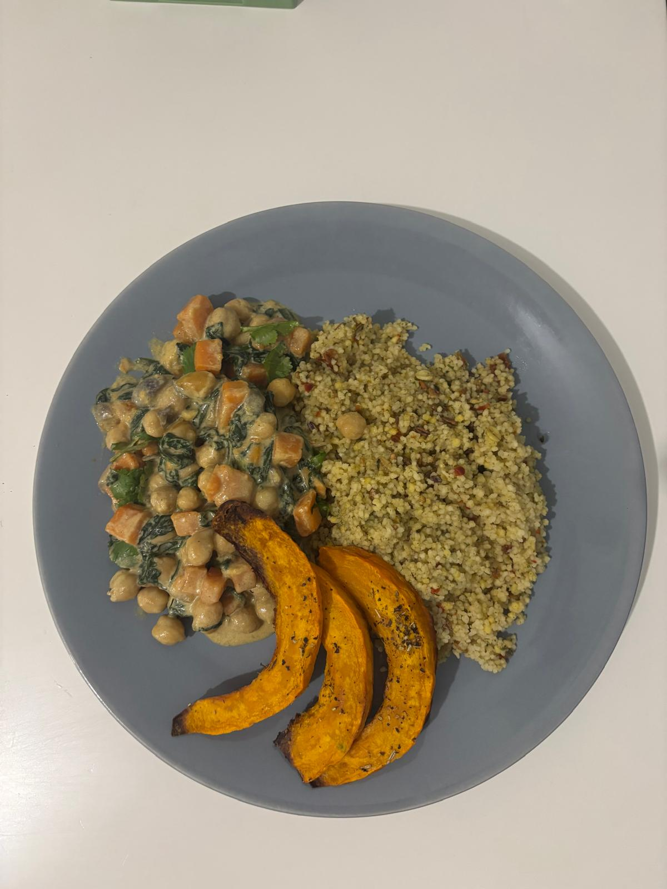

☰
Sommaire
1.
Home page
2.
Autumn
3.
Winter
4.
Summer
5.
Batchcooking
← Back
Sweet potatoes and spinach curry

⏱️ Prep Time
15 min
🔥 Cook Time
20 min
👥 Servings
2 or 3
Ingredients
1 clove of garlic
1onion
250 g sweet potato
150 g cooked chickpeas
125 g fresh spinach
200 ml coconut milk
1 clove of garlic
1 teaspoon curry powder
1 teaspoon ground ginger
Oil, salt, pepper
Instructions
Start by peeling and chopping the garlic, onion, and sweet potato into small pieces (this is important for cooking).
1 tablespoon of oil in a frying pan and sauté the garlic and onion for 2 to 3 minutes.
Add the sweet potato, curry powder, and ground ginger. Stir and sauté for 10 minutes, stirring regularly to roast the vegetables.
Then pour in the coconut milk, add the chickpeas and spinach.
Simmer covered for about 15 minutes.
Adjust the seasoning with salt and pepper if necessary.
Serve immediately with a little cilantro if you like
💡 Chef's Tips
It is important to add the spices when cooking the onions to release the flavors.